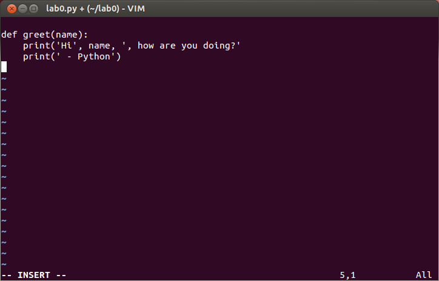

Vim
Introduction
Vim is a text editor known for its variety of keyboard shortcuts and its different editing modes. Vim is easy to customize, and there are many plugins on the internet that allow you to extend Vim's functionality.
This guide will walk you through the basics of using Vim, but it only scratches the surface — if you like Vim, there are plenty of neat things to learn!
That being said, Vim takes some time getting used to. Chances are, you will be frustrated more than once at the beginning. If you decide to use another text editor for now, that's okay — but give Vim another shot later!
Goals
After reading this guide, you should be able to do the following:
- Use Vim's normal mode, insert mode, and command mode
- Open and edit a file
- Save a file
- Quit Vim (not as straightforward as you might think)
- Use some basic Vim commands
Getting Vim on your own computer
You can install Vim on your own computer, depending on what type of computer you use:
- Mac: Vim comes pre-installed on Macs. All you have to do is open
a terminal and type
vim! You can also try MacVim, graphical (non-terminal) version of Vim for Macs Ubuntu: You can install Vim by opening a terminal and typing the following:
sudo apt-get install vimThis will install the terminal version of vim. You can also install GVim, a graphical version of Vim, by using this command:
sudo apt-get install vim-gtkTo start GVim, type
gviminto the terminal.- Windows: You can find the download link for Vim here. This installation includes the graphical version of Vim, as well as terminal versions.
If you have another type of computer, you can check the Vim website.
Note: this guide uses terminal Vim. Instructions for graphical Vim might be slightly different.
Example: greet.py
Since we are using the terminal version of Vim, we need a terminal! Go ahead and open one up.
Let's first create and navigate to a directory called example, using
the UNIX commands you learned in Lab 0:
mkdir ~/example
cd ~/exampleOpening files
Opening a file with Vim is as easy as typing the following command:
vim greet.pyHere, greet.py is the name of the file we want to edit. Since
greet.py doesn't exist, Vim will create the file for us. If we
already had a file called greet.py, Vim would open up the existing
file.
Note: you can also start Vim without specifying a particular file by simply typing
vim
Your terminal should now look like this:

Don't worry about the tildes (
~) — those just mean there is no text on those lines. Also, if you are greeted with some text ("VIM - Vi IMproved"), don't worry — once we start typing, that text will go away.
Normal mode and Insert mode
If you tried typing anything right now, the characters you typed would not appear on your screen (in fact, depending on what you pressed, a variety of things could happen). What's going on?
In most text editors (like Microsoft Word), everything you type will be displayed on the screen (e.g. if you type "See spot run", Word will show the words "See spot run").
Vim has different modes, each of which allow you to do different things. Normal mode allows you to use keyboard shortcuts for navigation, file manipulation, etc. Ironically, the one thing it doesn't allow you to do is type normally.
Note: Every time you open Vim, you will start in normal mode.
Vim also has insert mode, which allows you to use Vim like a regular text editor — you press keys, and the corresponding characters will show up on the screen.
To enter insert mode, press the letter i (for insert). At the bottom
of the terminal, you should see text that says -- INSERT -- This
tells us we are now in insert mode! Try typing a few things to verify
that the keys you press are showing up.
To get back to normal mode (why would we want to do that? We'll see
later), press the ESC key. The -- INSERT -- label at the bottom
should disappear.
Recap: From normal mode, you can enter insert mode by pressing
i. From insert mode, you can enter normal mode by pressingESC.
Editing files
Let's go to insert mode and begin writing our first Python file
(remember to look for the -- INSERT -- label at the bottom). At this
point, we don't expect you to know any Python yet — that's okay! All
you have to do is type in the following:
def greet(name):
print('Hi', name, ', how are you doing?')
print(' - Python')Tip: you'll notice that Vim's cursor is a block, not a single line. This can lead to confusion about where Vim will place the next character you type. Vim will start typing right before the cursor. For example, if your text is
def greetand the cursor is on the letter
g, then Vim will start typing right before theg.
Once you've finished typing, Vim should look like this:

Saving files
Now that we're done editing, we should save our file. To save files, we need to introduce a third Vim mode called command mode.
- Enter normal mode (if you are in insert mode, press
ESC). - Type in a colon (the
:key). Make sure it is not a semicolon (;)
You should now see a colon appear at the bottom left of your terminal — that tells us we are in command mode!
To save the file, type the letter w and then press Enter. You should
see a w show up next to the colon (make sure it is not a capital
W). Once you press Enter, the file will be saved.
This seems like a lot of effort just to save a file, but after practicing a few times, saving a file will take (literally) just a second. Here are the steps, in full
- Enter normal mode (press
ESC)- Enter command mode (press
:)- Press
w- Press
Enter
Running Python
In this class, you will be switching between your text editor (Vim) and Python a lot — writing code and testing code. It is often useful to have two terminals open: one for Vim, and the other for general use (such as running Python).
Go ahead and open another terminal (don't close Vim yet). Change
directories into the example directory, which contains our greet.py
file:
cd ~/exampleLet's play around with our code. In the new terminal, start by typing
python3 -i greet.pyThis command does the following:
python3is the command that starts Python- The
-iflag tells Python to start in interactive mode, which allows you to type in Python commands from your terminal greet.pyis the name of the Python file we want to load
Notice that the Python interpreter says >>>. This means Python is
ready to take a command.
Recall that we defined a function called greet. Let's see what it
does! Type in the following:
greet('Albert')Python will then print out
Hi Albert, how are you doing?
- PythonYou probably want Python to greet you and not me. So if your name is John, you should also type:
greet('John')and Python will print
Hi John, how are you doing?
- PythonOur code works! Let's close Python by typing in
exit()There are a couple of ways to exit Python. You can type in
exit()orquit(). On MacOS and Linux, you can also type inCtrl-d(this doesn't work on Windows).
Closing Vim
At this point, you can feel free to play around with Vim a little more. Once you are ready to exit Vim, you can quit from command mode:
- Enter command mode (by first entering normal mode, then pressing
:) - Type
q(for "quit") - Press enter.
If you have unsaved changes, Vim will prevent you from quitting. You can either save the file first with
:w, or you can add an exclamation mark to theq:q!if you don't want to save the changes. In addition, you can save and quit all in one go:
:wq
Once Vim exits, you will be taken back to the UNIX command line.
Summary
Congratulations, you've edited your first file with Vim! Here is a recap of what we've learned:
- Opening files: type
vim file_name - The difference between normal mode and insert mode
- Editing files: press
ito enter insert mode, and start typing - Saving files: enter command mode (press
:after entering normal mode) and typew - Using Python: in another terminal, type
python3 -i file_name - Closing Vim: enter command mode and type
q
Everything you've learned so far is enough to get you through 61A. However, the true power of Vim comes from its keyboard shortcuts — if you're interested, keep on reading!
Vim also has a built-in interactive guide, which you can start from the terminal by typing
vimtutorThis tutor will help you get accustomed to basic Vim commands. It is highly recommended!
Keyboard Shortcuts
One of the primary features of Vim is its extensive range of keyboard shortcuts. We will only describe the most basic commands here (there are too many commands to list them all out here). You can also find a more detailed list of shortcuts here, though it also only scratches the surface.
Different modes
During the walkthrough, it seemed like normal mode was pretty useless — after all, the only thing we did in normal mode was to get out of normal mode (e.g. to get into insert or command mode). However, this couldn't be further from the truth!
Before we begin, here is a diagram that explains how to get between different Vim modes.

Notice that normal mode is connected to all the other modes. This means
you'll need to switch back to normal mode — by using ESC — a lot.
On most computers, the ESC key is all the way in the top left corner
of the keyboard — so far away!
Because of this, many Vim users switch the ESC key with something
else. You can swap ESC with Caps Loc on the school computers:
- Click on the power button in the top right corner of the screen
- Click on "System Settings"
- Click on "Keyboard Layout", then click on the "Options" button. A new screen should pop up
- Click "Caps Lock key and behavior". At the bottom of the drop-down list, there is an option to "Swap Caps Lock and ESC". Select this option.
Now you can press Caps Lock instead of ESC to enter normal mode. Your
left pinky should be resting on the A anyway, so Caps Lock is just
one key away!
Navigating
In normal mode, instead of using the arrow keys to move around, you can use the following keys:
h: leftj: downk: upl: right
These keys take a little time to get used to, but once you've practiced for a few days, it becomes second nature.
Why would you want to use these instead of the arrow keys? All four of
these keys are on the home row of the keyboard — you don't even have
to lift your hand! After you get used to using hjkl, you'll wonder
how you ever had the patience to use arrow keys.
Here are some other keys used for navigation:
word:
w: moves forward to the beginning of the next wordb: moves backward to the beginning of the previous word
lines:
0: moves to the beginning of the line$: moves to the end of the line
document:
gg: moves to the top of the fileG: moves to the bottom of the file
Entering Insert mode
We've already seen how to enter insert mode by pressing i. There are
many different ways to reach insert mode from normal mode. Here are
just a few:
i: start inserting text where the cursor isa: start inserting text right after the cursorI: start inserting text at the beginning of the lineA: start inserting text at the end of the lineo: insert a new line after the current line and enter insert modeO: insert a new line before the current line and enter insert mode
Undo and redo
We all make mistakes. To undo a change in Vim, enter normal mode and
press u. Vim remembers several levels of modifications, so you can
keep pressing u to undo further and further back.
To redo a change, enter normal mode and press Ctrl-r. Again, Vim will
remember multiple changes, so you can redo multiple times.
Deleting text
The x command deletes a single character:
xdeletes the character right underneath the cursorXdeletes the character right before the cursor.
Using d provides more flexibility and range:
dddeletes the entire linedwdeletes the rest of the current word, starting from the cursorDdeletes from the cursor to the end of the line
Note: Vim's delete functionality acts like cut — Vim remembers what you deleted, and you can immediately paste the deleted text.
Copying text
In Vim, copying is called "yanking." The primary operator to yank text
is y:
yy: copy the entire lineyw: copy the rest of the current word, starting from the cursor
Note: Yanking and deleting use the same buffer to store text, so they will overwrite each other.
Pasting text
The primary key for pasting (or putting) is p:
p: pastes copied text right after cursorP(i.e.Shift-p): pastes copied text right before the cursor
Searching
There are two useful ways to search. The first is by pattern — this is
done by pressing the forward slash: /. For example, if you want to
search for the word def, you would type
/defYou can move through all the matches by pressing
n: moves forward through all matchesN: moves backwards through all matches
The second way is to search by line number. This is done by pressing
the colon :, followed by a line number. For example, if you want to
jump to line 42, you would type
:42Note: technically, searching by line number is a command mode option, not a normal mode option.
Visual mode
Another useful Vim mode is called visual mode. In visual mode, you can highlight multiple letters or lines and manipulate them. There are several ways to enter visual mode from normal mode:
v: enters regular visual modeV(i.e.Shift-v): highlights entire lines at a time
In each visual mode, you can use normal commands for various things:
- navigation (
hjkl,w, etc.) - deleting and yanking:
dwill delete all highlighted text;ywill yank all highlighted text. Both then return to normal mode
Customizing Vim
Another great feature of Vim is that it allows users to easily
customize it. All customizations can be saved in a file called .vimrc
in your home directory. Since .vimrc is just another file, you can
edit it using Vim:
vim ~/.vimrcSyntax highlighting
All great text editors have syntax highlighting to make it easier to write code. To turn on syntax highlighting for Vim, write the following line:
syntax onYou can specify the colorscheme with this command:
colorscheme desertThis uses the desert colorscheme, but there are many others that you
can find online.
Indentation rules for different file types can be turned on with
filetype plugin indent onLine numbers
To turn on line numbers, include the following line
set nuTabs
Python is very picky about whitespace (indentation, spaces, and newlines). Here are common settings that work well with Python:
set expandtab " Uses spaces instead of tabs
set tabstop=4 " Each tab is 4 spaces
set autoindentKey bindings
In addition to settings, Vim allows users to define custom keyboard shortcuts. Here are some useful ones:
nnoremap ; : " Enter command mode by typing semicolon
nnoremap j gj " Move along rows,
nnoremap k gk " not linesFor more help on customizing the .vimrc file, see this
link.